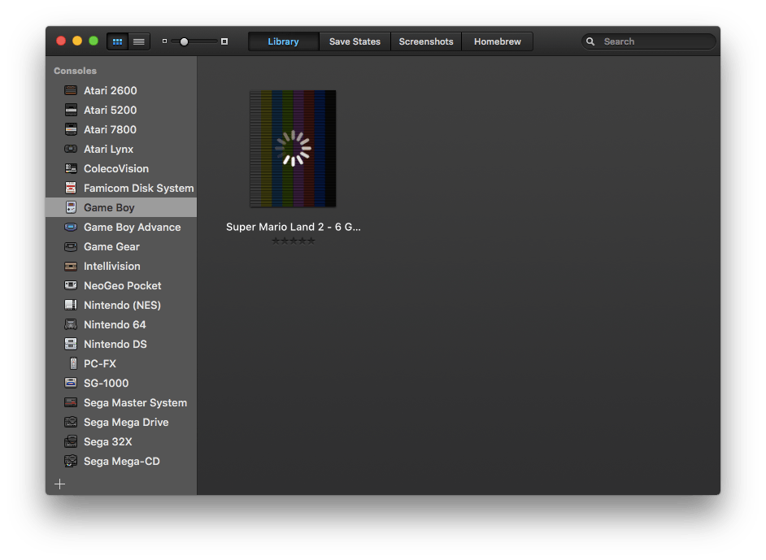
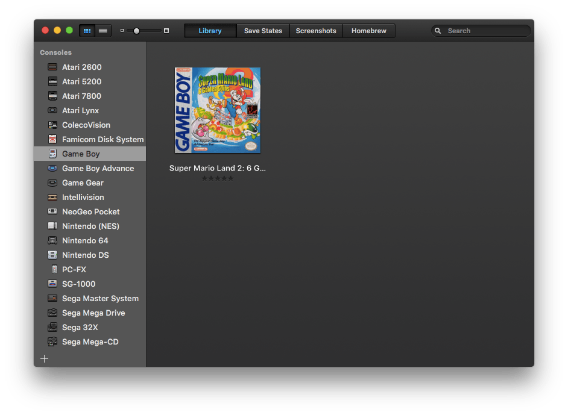
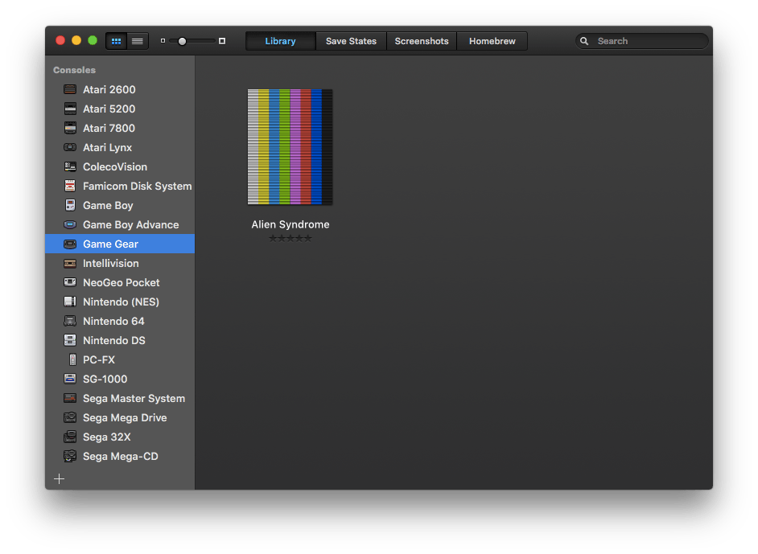
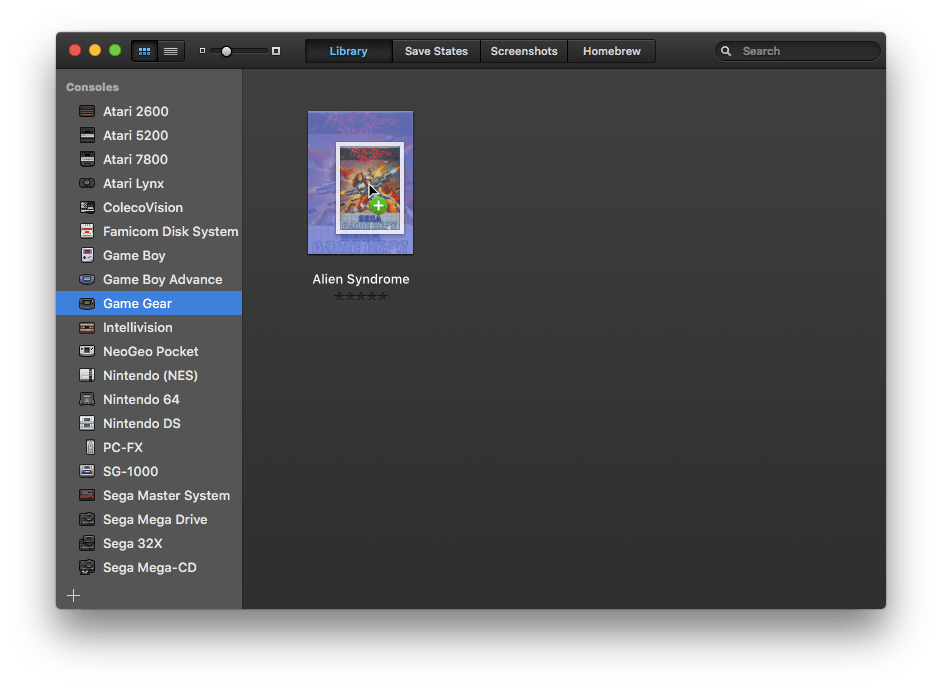

When adding a game to OpenEmu, it will attempt to identify the game and add metadata from OpenVGDB. If box art is available, OpenEmu will then begin to download it:

Once the box art has been downloaded, it is displayed like this:

However, if no box art is found, the game will appear like this:

You are able to add your own box art to games that do not have it, however. All you need to do is drag the box art image onto the game in OpenEmu, and it will be set as that game's box art:
